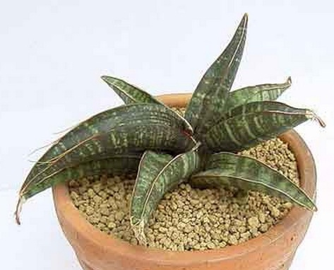

Sansevieria Trifasciata 'Superba'
Ukuran: Sedang (± 30-40 cm)
Cahaya: Tidak langsung / Low light
temukan berbagai pilihan tanaman Lidah Mertua (sansevieria) terbaik untuk mempercantik ruangan anda.

Ukuran: Sedang (± 30-40 cm)
Cahaya: Tidak langsung / Low light
Ukuran: Besar (± 60-80 cm)
Cahaya: Panas matahari langsung